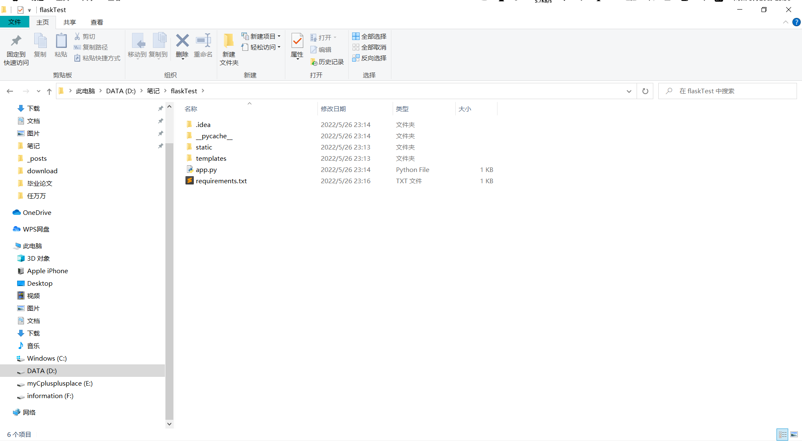
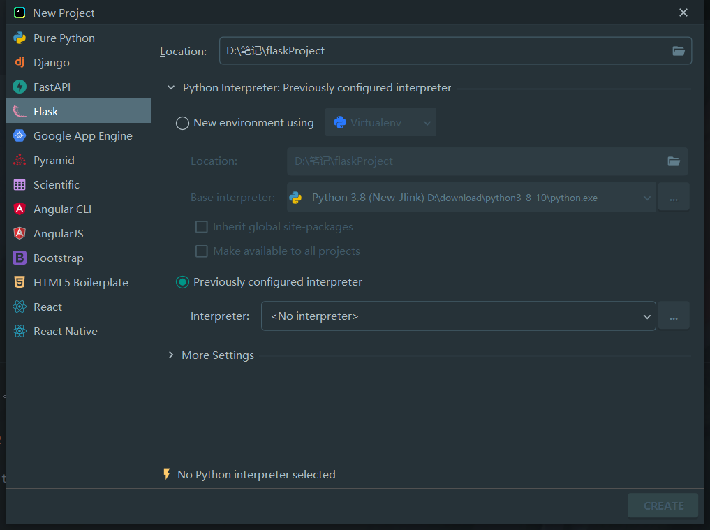
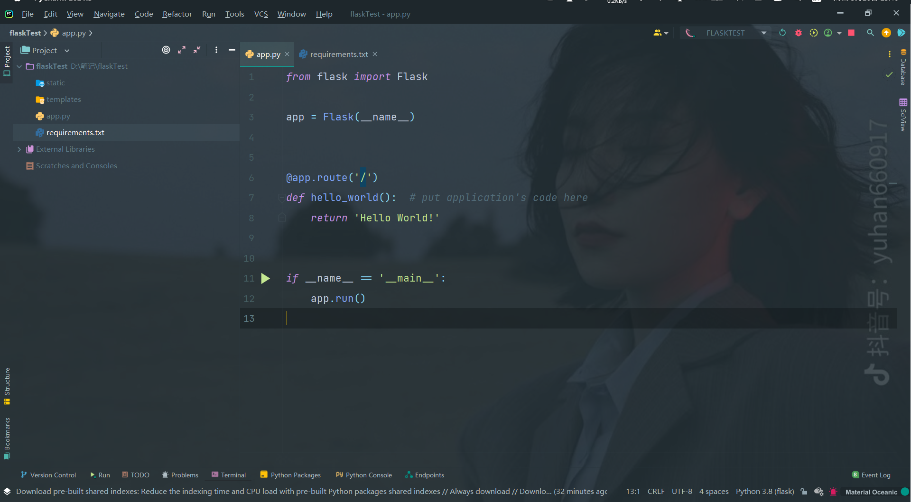
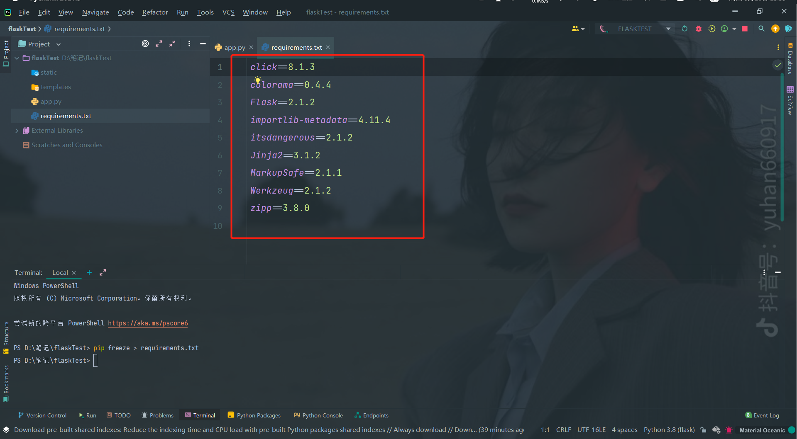
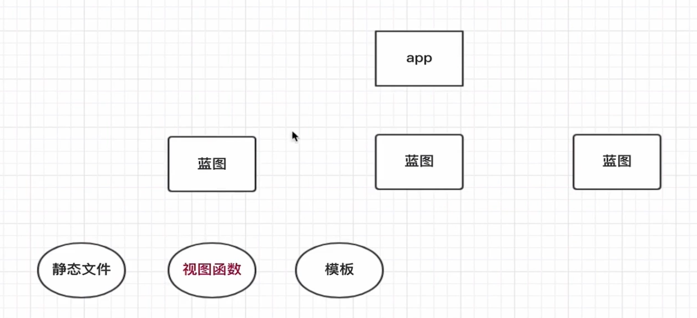

python之flask 环境安装 virtualenv 安装virtualenv的一个好处呢就是环境隔离，类似于docker的集装箱概念吧，因为python会有很多扩展组件，组件的版本有很复杂，所以一套互相隔离的环境就相当重要了
安装教程 安装
查看是否安装成功
创建虚拟环境
1 virtualenv envname # 创建一个名字为envname的虚拟环境
指定用哪个python版本创建环境
1 virtualenv -p c:\Python27\Python.exe envname # 如果安装了多个python版本，如py2和py3，需要指定使用哪个创建虚拟环境
启动虚拟环境
1 2 3 4 5 6 7 # 进入虚拟环境文件 # 进入相关的启动文件夹
到此一个虚拟空间就完成了，现在就可以使用这个虚拟环境了。
使用Pycharm和virtualenv创建一个flask项目 首先随便建一个文件夹用来存放我们的代码

新建项目

选择我们的项目地址，以及新建的virtualenv空间和virtualenv指定的python解析器，点击create创建完成。
hello word 
一个hello word就好了
requirements.txt 1 pip freeze requirements.txt
使用该指令将我们项目所需要的依赖输出到requirements文件中，下次部署环境时直接
1 pip install requirements.txt

可以看到这个requirements.txt包含了我们虚拟空间的依赖以及版本号，并没有其他空间的依赖项。
上代码 1 2 3 4 5 6 7 8 9 10 11 12 13 14 15 16 17 18 19 from flask import Flask@app.route('/' def hello_world (): return 'Hello World!' @app.route('/he' def a ():return "hi!" if __name__ == '__main__' :
Flask运行过程
当客户端想要获取资源时，一般会通过浏览器发送一个请求
此时，通过app.run启动的web服务器会把客户端的所有请求都交给Flask程序实例
程序使用Werkzeug来做路由分发（URL请求和视图函数之间的对应关系）
根据URL请求，找到具体的视图函数并进行调用
在Flask程序中，路由的实现一般是通过程序实例的装饰器实现
Flask调用视图函数后，可以返回两种内容：
字符串内容：将视图函数的返回值作为相应的内容，返回给客户端。
HTML模板内容：获取到数据后，把数据传入HTML模板文件中，模板引擎负责渲染HTTP响应数据，然后返回响应数据给客户端。
路由传参 有时我们需要将同一URL映射到同一个视图函数处理，比如：使用同一个视图函数来显示不同用户的订单信息。
路由传递的参数默认当作str处理
1 2 3 4 5 6 7 @app.route('/order/<int:orderId>' def getOrderId (orderId ):print (type (orderId))return 'orderId %s' % orderId
这里指定int，会调用系统的路由转换器进行转换和匹配，如果类型没有转换成功就无法匹配该路由
结构化管理
这一点很好理解，这是一种思想，分类管理。而不是要把所有的东西都放在一个地方。比如我们写api,新建一个api的包，v1代表版本，然后下面才是我们具体的api文件。
这里的路由不能使用@app.route

蓝图需要向app注册,关于app对象的配置统一写在app.py里面。
1 2 3 4 5 6 7 8 9 10 11 12 13 14 15 def createApp ():'app.config.setting' )'app.config.secure' )return appdef registerBlueprints (app ):from api.v1.book import bookfrom api.v1.user import user
实现一个自己的蓝图 蓝图包括哪些功能呢？
路由
路由和视图函数的绑定
他是怎么实现的呢，看源代码
1 2 3 4 5 6 7 8 def route (self, roule, **option ):def decorator (f ):"endpoint" , f.__name__)return freturn decorator
我们自己模仿实现
1 2 3 4 5 6 7 def route (self, rule, **options ):def decorator (f ):return freturn decorator
register
1 2 3 4 5 def register (self, bp, url_prefix=None ):for f, rule, options in self.mount:"endpoint" , f.__name__)